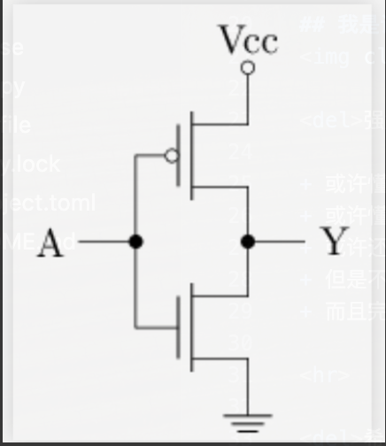
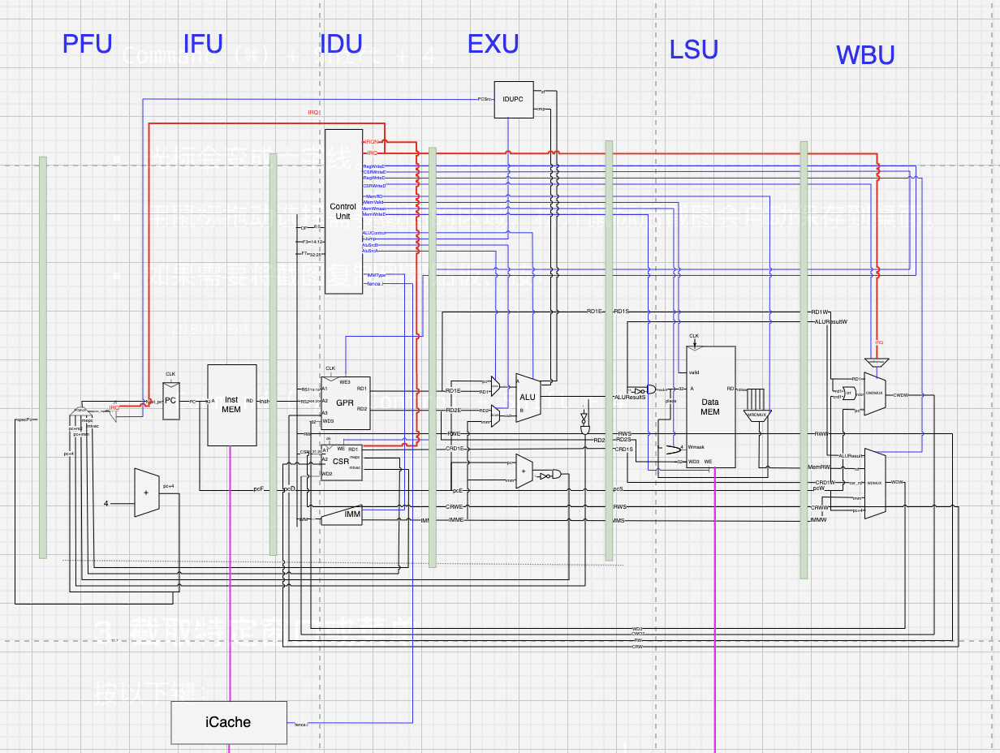

强大的PWN手✖️ (不务正业的PWN手✔)
希望能从零到一造一台计算机
希望能不只会敲代码，还能解决问题（Coder -> Engineer）
希望能不只会解决问题，还能尽我所能改变世界（Engineer -> Creator）
课程slide或许会发送至QQ群
首先我认为一节好课应该让学生们课前就知道上完课之后他们将掌握什么
所以我将本次课分为了多个问题
如果你可以独立解决这些问题，那你在本次课上或许收获不到什么
但如果你需要借助网络来回答这些问题，那你这次课一定可以收获很多干货
并且，本课程不会讲解太多的细节，毕竟时间有限
hjkl切换幻灯片o或esc：总览b或者v：息屏、亮屏f：全屏（esc退出全屏）Pwn (/ˈpoʊn/, /ˈpuːn/, /pəˈʔoʊn/, /ˈpɔːn/, /piˈoʊn/, /pwəˈʔn̩/, /ˈoʊn/)，是一个骇客语法的俚语词，自"own"这个字引申出来的[1][2]，这个词的含意在于，玩家在整个游戏对战中处在胜利的优势，或是说明竞争对手处在完全惨败的情形下，这个词习惯上在网路游戏文化主要用于嘲笑竞争对手在整个游戏对战中已经完全被击败（例如："You just got pwned!"）。过去式的拼写可以拼成pwnd，pwn3d，pwnt（读成 t 这个音）或是powned（读成 d 这个音）。 在骇客行话里，尤其在另外一种电脑技术方面，包括电脑（伺服器或个人电脑）、网站、闸道装置、或是应用程式，"pwn"在这一方面的意思是攻破（"to compromise"，危及、损害）或是控制（"to control"）。在这一方面的意义上，它与骇客入侵与破解是相同意思的。例如某一个外部团体已经取得未经公家许可的系统管理员控制权限，并利用这个权限骇入并入侵（"owned" 或是 "pwned"）这个系统。
如果提起CTF比赛的其他方面，回答相应的问题或许很直观
但是PWN并不是那么直观（至少从名字上看是这样的）
或许每个人心中有不同的答案
于我而言，PWN就是

晶体管通过将电压大小转化为开关的闭合，从而实现了模拟信号到逻辑信号的转换
那么我们一定就能通过晶体管实现一些简单的逻辑运算，例如左图，就是一个非运算，没错，就是你们C语言中熟悉的!或者~符号的作用
同样的，与或运算也能被相应表示出来
与或非运算本质是对于二进制数据的位运算
你终于不需要高中的电路知识就可以学习计算机啦！
本质的原因是：将模拟信号上面实现了一个抽象层，将逻辑信号和模拟信号decouple（解耦）
既然存在抽象层，逻辑信号其实似乎不管下面是不是模拟信号，刘慈欣的某一部小说就使用了这种思想(人列计算机)
计算机名：秦一号
CPU：秦始皇最精锐的五个军团
按照上述所说，我们现在只需要关注二进制数字就可以了
计算机此时变成了一堆二进制 但...
010000010011（0x413）
给你这一坨二进制，我们又是如何知道他的含义呢？
计算机当然懂这一堆二进制，但是计算机也是人类制造的
所以一开始造计算机的人又是怎么知道这一坨二进制的含义的呢？
一定是有一个地方！
有没有想过不使用二进制来构建计算机系统呢？
如果我使用模拟信号（即电压值）或者量子信号作为基本单元
这是可行的，只是因为数字芯片占据主流，所以其上的基础设施很完善，让我们误以为二进制就是计算机的全部
但是人类的大脑就是一个巨型计算机，但是构成的基础却不是01，而是类似于模拟信号的东西（激素浓度，神经信号...）
整个世界同样不是由01构成的，二进制究竟是不是最正确的？
在AI时代，数字芯片是否会被取代呢？
没错，就是这个地方定义这所有（真的是所有吗？）二进制数的含义，也就是指令的编码规则
In computer science, an instruction set architecture (ISA) is
an abstract model that generally defineshow software controls the CPU in a computer or a family of computers.[1]A device or program that executes instructions described by that ISA , such as a central processing unit (CPU), is called an implementation of that ISA.--Wikipedia
你们或许更熟悉的是assembly language(汇编语言)
In computer programming, assembly language (alternatively assembler language[1] or symbolic machine code),[2][3][4] often referred to simply as assembly and commonly abbreviated as ASM or asm, is any
low-level programming language with a verystrong correspondence between the instructions in the language and the architecture's machine code instructions.
是一种编程语言，但是十分依赖于机器，或者说十分依赖于不同的ISA（而C语言则是不依赖于机器的，更多关于C语言和asm的关系，在后面会有所介绍）
由于我讲课前面是z佬，所以这一部分我相信我可以略过
当然不是！
一个二进制可执行程序，如一个ELF程序或者.exe程序，他包含了什么东西呢，这些东西又是在哪里定义的呢？
如果你现在有一个linux操作系统，请和我一起运行
readelf -a <elf程序> #metadata（man 5 elf）
readelf -x .data <elf程序> #数据
readelf -x .text <elf程序> #指令
so，二进制程序 = 元数据 + 数据 + 指令

An implementation of ISA
我们终于可以理解什么是计算机了！
冯诺伊曼架构借由创造一组指令集结构，并将所谓的运算转化成一串程序指令的执行细节
并将这串执行细节和相关的数据存储一个巨大的二维数组中（内存）（uint64_t memory[n];）
而处理器（CPU）只是不断重复
如果你翻看ISA的定义，
似乎cpu仅仅是ISA的一个实现方式，ISA作为一种规范（抽象层），实际上可以有多种实现方式
比如，我们可以用一个c程序实现ISA（但是为了叙述的完整性，将这个具体的实现demo放在Q6进行讲解）
计算机的世界太过于复杂，人们想出各种办法对其进行简化，包括
增加抽象层，模块化，和对其进行建模
对一个事物进行建模，可以简化一个事物的细节而抓住其主要特征
现在我想讨论一个具体的模型：
在Q4，我们说过，cpu的功能不就是在内存中取指，然后翻译执行吗？
而内存又仅仅只是一个巨大的数组而已
那我们是否可以用c语言来写一个ISA的impl呢？
当然可以！你电脑中的虚拟机大概率就是c写的（实际上底层就是qemu，一个很牛逼的模拟器）
一个仅用一个头文件实现的一个RISC-V32IMA系统模拟器
wget --no-check-certificate -r -np -nH --cut-dirs=2 -R "index.html*" "https://jyywiki.cn/os-demos/introduction/mini-rv32ima/"
在这个模拟器中，整个计算机系统的状态都被封装在一个结构体中 (包括内存！是的，的确有内存也封装在一起的 CPU，例如全志 D1s) ：
struct CPUState {
// Processor internal state
uint32_t regs[32], csrs[CSR_COUNT];
// Memory state
uint8_t *mem;
uint32_t mem_offset, mem_size;
};
而你完全可以把 rv32ima_step 理解成是数学意义上的函数：它根据当前的 CPUState，计算出执行一条指令后的 CPUState。
CPUState = rv32ima_step(CPUState)
实际上，每一条指令的执行，都会使这个状态向前走一步
如果我们用状态机的视角来看c语言代码
状态就是所有变量的值（全局变量，局部变量）
那我们就可以从这个视角实现一个c语言的解释器
就像python解释器一样！每走一步就可以获得每一个变量值的变化
我们能否抓住这个输入机会恶意修改c语言状态机（或者说计算机状态呢？）
这就是pwn题的本质！
不知道你有没有遇见过这样一个问题
每次按照官网教程下载一个包，总是在自己的环境上没有办法配置，总是被一些莫名其妙的依赖整的头昏脑胀
是否能将linux发行版也看做一个状态机？
当你第一次获得一个linux发行版的时候，他还是很干净的，你每修改一个配置文件，每新下载一个包，他的状态就会向前走一个步
所以到最后，你的linux变得越来越混乱，
我不是在传教，我只是告诉大家可以用state machine的观点去看计算机世界的任何事物
然后就会发现，pwn本质就是通过干扰原本（程序员预期）的状态转移，来到达一个恶意的状态
在Q3，我们第一次接触了ABI的一个方面，你还记得吗？
所以我们为什么需要这个规范呢？
本质的原因是ISA手册，以及各种数据编码手册不够描述整个二进制的世界
或者换一种说法，上面这些手册仅仅描述了二进制的构成，而没有描述二进制世界的规则
而这就是ABI（Application binary interface）手册发挥作用的地方
你是否存在这些疑问
所有的一切，都可以在ABI手册中找到答案
事实上, ABI手册是ISA, OS, 编译器, 运行时环境, C语言和用户进程的桥梁, 非常值得大家去阅读. ICS课本上那些让你摸不着头脑的约定, 大部分也是出自ABI手册. Linux上遵守的ABI是System V ABI, 它又分为两部分, 一部分是和处理器无关的generic ABI(gABI), 例如ELF格式, 动态连接, 文件系统结构等; 另一部分是和处理器相关的processor specific ABI(psABI), 例如调用约定, 操作系统接口, 程序加载等. 你至少也应该去看看ABI手册的目录, 翻一下正文部分的图, 这样你就会对ABI手册有一个大致的了解. 如果你愿意深入推敲一下"为什么这样约定", 那就是真正的"深入理解计算机系统了".
--南大PA实验,希望这段话能带给大家启发和力量
来一个ABI的具体例子吧：function calling convention
is an abstract data type
想象一个盘子堆，你仅仅只可以在盘子堆的上部进行放置和移除盘子
数据进出的顺序是后进先出（Last In First Out）
支持两种操作
是不是也挺简单的
你是否有过疑问，函数调用是怎么实现的？函数是怎么返回到具体的位置的？
更重要的问题是如果有多个函数在不断递归调用，怎么样处理他们之间的复杂的父子关系
0x8000000c: call [_trm_init@0x80000260]
0x80000270: call [main@0x800001d4]
0x800001f8: call [f0@0x80000010]
0x8000016c: call [f2@0x800000a4]
0x800000e8: call [f1@0x8000005c]
0x8000016c: call [f2@0x800000a4]
0x800000e8: call [f1@0x8000005c]
0x8000016c: call [f2@0x800000a4]
0x800000e8: call [f1@0x8000005c]
0x8000016c: call [f2@0x800000a4]
0x800000e8: call [f1@0x8000005c]
0x8000016c: call [f2@0x800000a4]
0x800000e8: call [f1@0x8000005c]
0x80000058: ret [f0] # 注释(2)
0x800000fc: ret [f2] # 注释(1)
0x80000180: call [f2@0x800000a4]
0x800000e8: call [f1@0x8000005c]
0x80000058: ret [f0]
0x800000fc: ret [f2]
0x800001b0: ret [f3] # 注释(3)
0x800000fc: ret [f2]
如此复杂的关系，如何处理，如果它是你的一道PTA题目呢？你会选择什么方法解决？
问题描述：
没错，答案就是用
call对应着入栈，return对应着出栈，由于LIFO，可以很好的处理函数之间的调用关系
真实的环境中也是通过这种方式来处理函数的关系的
描述函数之间的调用关系在真实环境中确实很有用
但是，在真实的环境中
这些数据同样需要被描述，不过我们只仅仅需要将这些元数据在调用时顺手放在栈中不就好了
这就是函数栈帧
可以看到，当前执行的函数永远出现在栈顶，直到它return，这个栈帧就会被pop出去，此时栈顶指向上一个函数
可是，什么是调用约定呢？
就是如何调用一个子函数（或者说procedure）的过程，包括参数传递等
常用的调用约定实现有
时间原因，不展开讲具体细节了
用状态机的视角来看计算机和pwn
这就是我理解的PWN
pop rdx;
pop rdi;
pop rsi;
pop rsi;
sub rdx, 0x41;
call rdx;
白夜的wp
通过放入有限条指令，每一条指令都精心构造，对状态进行转移，最终提供了一个最小版本可以调用syscall的状态机
最后一步将状态机转移至某一条指令，最终再开辟一个更大的空间从而实现getshell
人类太蠢了
一个基本的矛盾：
人类写程序本质上就是人类性到机器性的一次靠近
这件事情本身就不合理，而是应该让机器给机器写程序
比如：
int i, j;
for(i = 0; i < 100; i++)
for(j = 0; i < 100; j++);
所以，犯错是不可避免的
语法错误
虽然很烦人，但是可以避免一些错误通过编译
运行时错误
会报运行时错误，比如常见的segmentation fault
但至少可以修复
漏网之鱼
比如a = malloc(0x100);在很多情况下都运行良好，
但是将你的代码给别人用的时候，或者和别人的代码合并的时候，会不会偶尔出现a == NULL的情况？
1,编译器可以发现所有的错误，包括语法错误和
逻辑错误不像是语法错误，它极其具有主观性：
比如上面的ij写错，是程序员故意而为之还是手滑写错了，这个很难仅靠编译器去区分
于是需要程序猿的介入！
这自然是可行的，比如，在程序中插入断言assert，来告诉运行时环境到这里，某个变量应该是什么值，在什么范围以内
但是这也仅仅是在运行时，没有办法把逻辑错误提前到编译时，但是我相信，这一定是可以做到的，maybe 20年以后
如何通过一套测试可以找出程序的所有漏洞？
换句话说，我们如何确保一个程序绝对正确？
我们可以用数学的语言提出程序的规约 + 例如：任意时刻 b≥0 + 有没有可能真正 “证明” 它呢？
程序正确性证明的两种方法： 暴力枚举
写出证明